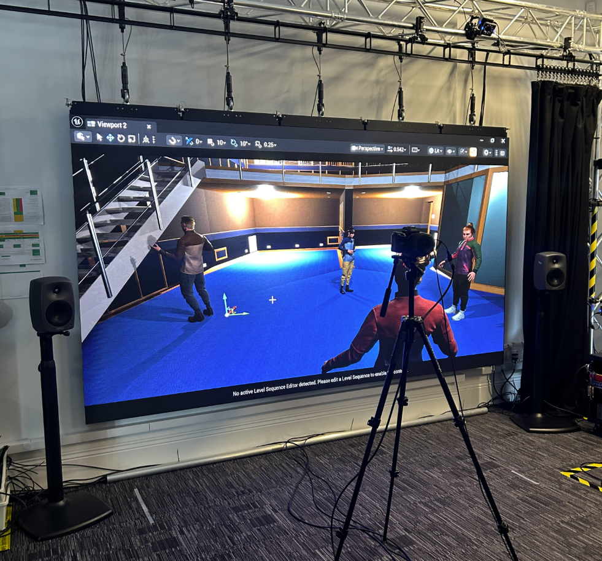
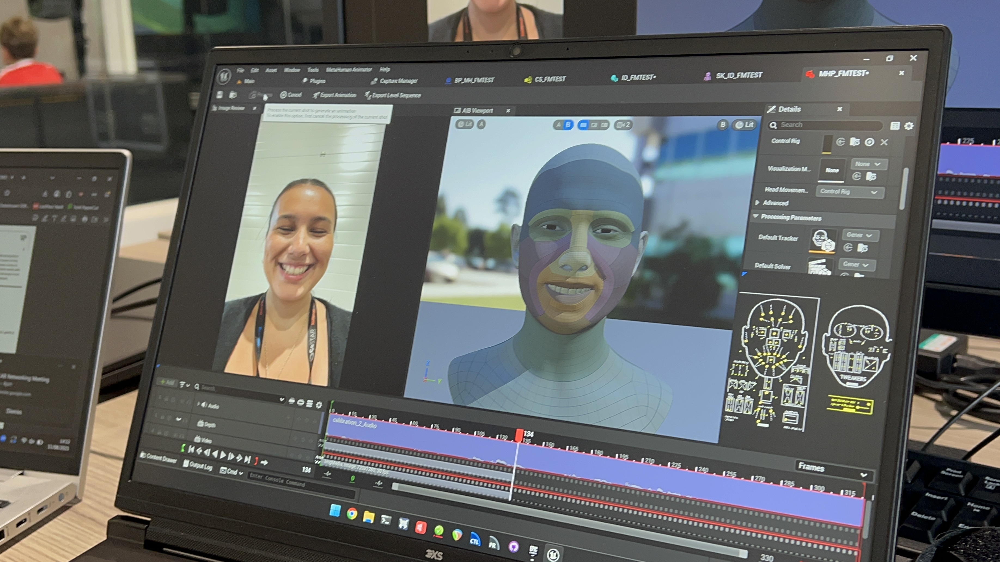
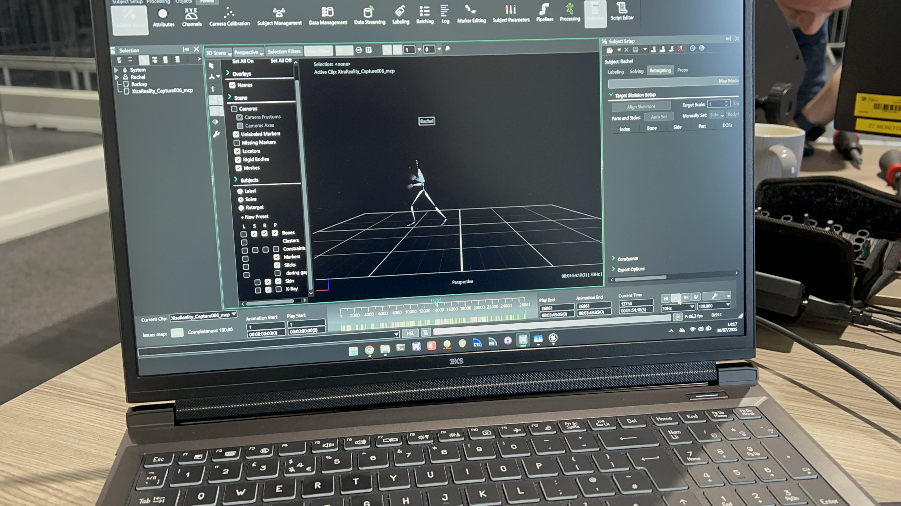

CoSTAR Live Lab - Marnie Glum
Assisted on a project exploring remote connectivity of live performers being projected into digital spaces together.

Project Overview
As part of CoSTAR Live Lab's Ideate residency, Xtra Reality began investigating alternate methods to deliver their virtual experiences and build upon their mixed-reality walking tours. The team worked together to research and experiment with creating mixed-reality content and compared previous volumetirc capture workflows with alternate motion capture led methods.
The Technical Challenges & Solutions
Hurdle 1: Cross Disciplinary Tecnhnical Communication
The Problem: Working alongside senior postdoctoral researchers, audio experts, and creative founders required translating complex rigging and engine limitations into actionable project insights.
The Solution: Acted as the technical bridge for the character pipeline. I clearly communicated engine constraints (such as mesh limitations and performance overheads) to the wider team, helping shape the practical guidelines for the project’s mixed-reality production.
Hurdle 2: Pivoting from Environment Design to Advanced Character Pipelines
The Problem: My prior Unreal Engine experience was strictly focused on creating digital environments, structuring scenes and camera placement. I had zero experience with character rigging, skeletal hierarchies, MetaHuman assets, or using the Sequencer to orchestrate complex animation data.
The Solution: I dove into documentation and tutorials in a fast-paced environment, learning how to configure IK Rigs and IK Retargeters to translate Vicon skeletal data onto the unique MetaHuman structure. I then taught myself how to use the Sequencer to orchestrate, clean up, and bake out functional animation takes that the team could confidently use as prototypes.
Asset Development Gallery
Swipe through the project assets. Hover over any card to reveal the technical logic, implementation details, and project necessity.

Fig 1. Facial calibration testing.

Fig 2. Vicon Motion Capture.
.jpg)
Fig 3. MetaHuman character design and facial structure.
Technical Adaptation & Workflow Evaluation
Expanding my skill set from virtual environments into advanced animation systems required a rapid shift in technical focus. Faced with processing real-time tracking data and configuring complex digital characters for the first time, the objective was to decode an unfamiliar backend infrastructure and quickly establish a practical process for the team.
1. Hardware Integration & Set Adaptation
Stepping onto a live motion capture stage for the first time meant moving out of a pure software environment and learning how physical capture spaces operate under production conditions. I jumped directly into production by assisting on-set with the physical Vicon setup. Learning how tracking markers translate from physical actors to live streams allowed me to understand the technical assets at their source, giving me the vital context needed to handle the files correctly once they were imported into the engine.
2. Visual Affordance & Level Progression
Transitioning from static digital environments to the MetaHuman framework presented a steep learning curve regarding complex joint hierarchies, bone rotations, and skeletal structures. I focused on building a functional bridging system using Unreal Engine’s IK tracking tools. By mapping out the data paths from the Vicon skeletal layout to the MetaHuman skeleton, I resolved initial rotational alignment issues and created a repeatable process to translate physical performances onto digital assets.
3. Timeline Management & Asset Delivery
Managing data inside the Sequencer required precise track orchestration and timeline trimming to prevent animation glitches. Instead of over-complicating the setup with advanced settings too early, I focused on building a clean, stable baseline to cleanly blend and bake the final takes into functional prototypes for the creative team.
Reflection & Further Development
A transparent reflection reveals the steep technical learning curves I navigated throughout this journey, alongside a clear personal roadmap for how I will carry these newly developed skills into my future technical roles.
What I learnt: In a fast-paced R&D environment, trying to perfectly master complex tools right away can stall production. I learnt to prioritize functionality and stability—focusing on delivering a clean, usable asset that successfully served the project's goals.
How I'll apply it: On future projects, I will focus on delivering a functional prototype first to maintain team momentum, saving hyper-optimization for the final stages of production.
What I learnt: Assisting with the physical Vicon mocap setup completely changed how I handled the data inside Unreal Engine. Seeing the physical markers and actor movements helped me troubleshoot skeletal alignment issues much faster inside the software.
How I'll apply it: I now know to seek out the source of my technical assets. Whether working with animation, audio, or 3D models, understanding how data is generated outside the engine makes me a much faster problem-solver inside it.
What I learnt: Entering a project where I was completely unfamiliar with core tools like Sequencer taught me how to learn efficiently under pressure. Instead of trying to read everything, I learned to break the pipeline down into micro-problems.
How I'll apply it: I now have a proven personal blueprint for tackling cutting-edge, unfamiliar technologies. On future projects, I won't be intimidated by new software updates or complex engine features because I know how to systematically reverse-engineer them step-by-step.